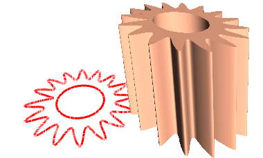

Solids of extrusion.
Let's create a solid of extrusion with a circular hole. An unclosed spline will be the extruded contour.
This code creates a spline:
SG_POINT tmpPnt;
SG_SPLINE* spl2 = SG_SPLINE::Create();
int fl=0;
for (double i=0.0;i<2.0*3.14159265;i+=0.13)
{
tmpPnt.x = ((double)(fl%3+2))*cos(i);
tmpPnt.y = ((double)(fl%3+2))*sin(i);
tmpPnt.z = 0.0;
spl2->AddKnot(tmpPnt,fl);
fl++;
}
spl2->Close();
sgCSpline* spl2_obj = sgCreateSpline(*spl2);
SG_SPLINE::Delete(spl2);
sgGetScene()->AttachObject(spl2_obj);
spl2_obj->SetAttribute(SG_OA_COLOR,12);
spl2_obj->SetAttribute(SG_OA_LINE_THICKNESS, 2);
The hole will have the form of the circle with 1.6 radius:
SG_CIRCLE cirGeo;
SG_POINT cirC = {0.0, 0.0, 0.0};
SG_VECTOR cirNor = {0.0, 0.0, 1.0};
cirGeo.FromCenterRadiusNormal(cirC,1.6, cirNor);
sgC2DObject* cir = sgCreateCircle(cirGeo);
sgGetScene()->AttachObject(cir);
cir->SetAttribute(SG_OA_COLOR,12);
cir->SetAttribute(SG_OA_LINE_THICKNESS, 2);
Let's extrude along the (1, -2, 5) vector:
SG_VECTOR extVec = {1,-2,5};
sgC3DObject* exO = (sgC3DObject*)sgKinematic::Extrude((const sgC2DObject&)(*spl2_obj),
(const sgC2DObject**)(&cir),1,extVec,true);
sgGetScene()->AttachObject(exO);
exO->SetAttribute(SG_OA_COLOR,30);
Then we'll move the obtained solid:
SG_VECTOR transV1 = {-7,0,0};
exO->InitTempMatrix()->Translate(transV1);
exO->ApplyTempMatrix();
exO->DestroyTempMatrix();
See also:
sgCSpline sgCSpline::Create SG_SPLINE
sgGetScene sgCScene::AttachObject sgCObject::SetAttribute
Illustration:
